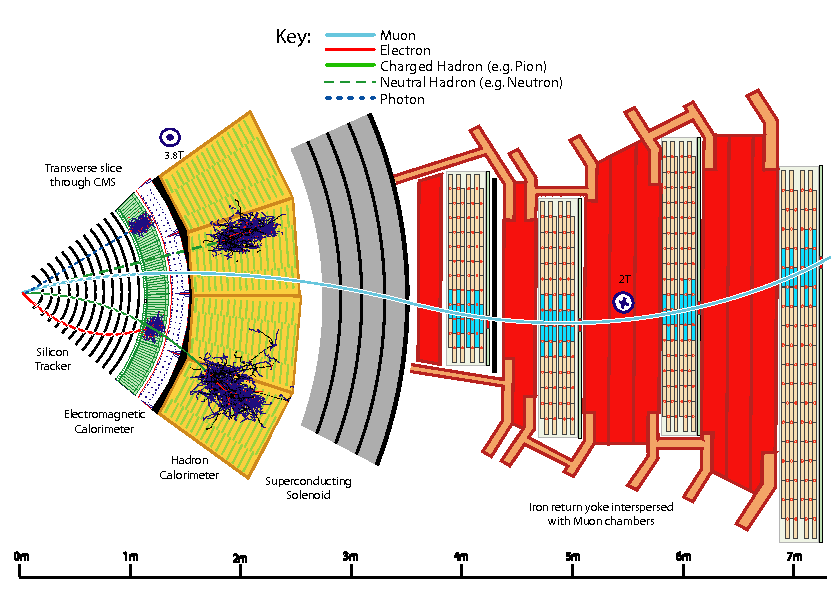
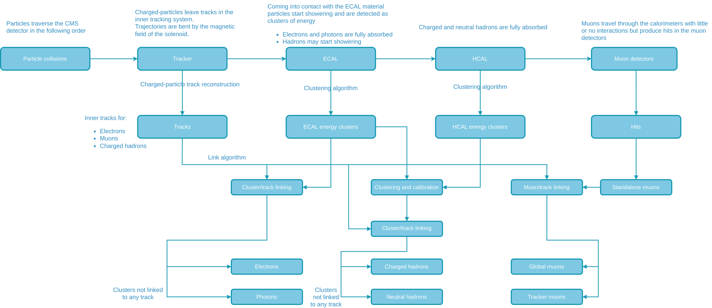

Overview
PRELIMINARY (COMMENTS WELCOME)
Welcome to the documentation of the CMS Particle Flow Algorithm.
The aim of this page is to provide a centralized overview of the CMS Particle Flow algorithm with the main focus being on:
This page is based on [1].
Link to the Particle Flow algorithm in CMSSW.
What is Particle Flow?
The Particle Flow (PF) algorithm is used to reconstruct and identify all particles produced in CMS individually by combining information from all subdetectors.
These particles include:
How do particles traverse through the CMS detector?
Starting from the interaction point, particles will traverse outwards, passing through the following subsystems:
- Inner tracker
- Electromagnetic calorimeter (ECAL)
- Hadronic calorimeter (HCAL)
- Solenoid
- Muon system
The central feature of the CMS detector is a large superconducting solenoid magnet with a field of currently 3.8 T. Due to the strong magnetic field, the trajectories of charged particles traversing the detector are bent, allowing for a precise momentum and charge measurement by reconstructing their path using the inner tracking detectors. Neutral particles however are identified and measured by their energy deposits in the two calorimeters. Both the inner tracking system as well as the two calorimeters are physically located inside the solenoid, with the muons systems placed in and around an iron return yoke constraining the magnetic field outside the solendoid. A transverse slice of the CMS detector can be seen in Figure 1, showing how different particles interact with the detector elements and travel through the detector. A detailed description of the CMS detector with all of its subdetectors can be found in [2]. A short summary of the particle interactions in the detector elements is given below.

- From the interaction point outwards, particles first enter the inner tracking system, where charged particle trajectories (tracks) and origins (vertices) are reconstructed from hits in the layers of the CMS tracking system. The tracks are bent due to the magnetic field, which enables the measurement of charged particle momentum and electric charge.
- From the inner tracking system, particles enter the ECAL, where depending on the particle type they start showering and losing energy, which can be reconstructed as clusters. Electrons and photons are fully absorbed in the ECAL, charged and neutral hadrons lose some but usually not all of their energy and move on the the HCAL together with the muons, which as minimum ionizing particles (MIP) only lose small amounts of energy in the calorimeters.
- Charged and neutral hadrons continue showering in the HCAL, where they lose most if not all of their energy and get fully absorbed. Hadrons with enough energy can penetrate the outer boundaries of the HCAL and are stopped in the iron yoke surrounding the solenoid.
- Finally, muons as the only standard model particles, except neutrinos passing through all previous detector systems, leave tracks in the muons system allowing for their identification and futher constraints for their momentum reconstruction.
Code organization overview
WORK IN PROGRESS

PFElements -(PFBlockAlgo)> PFBlock -(PFAlgo)> PFCandidates